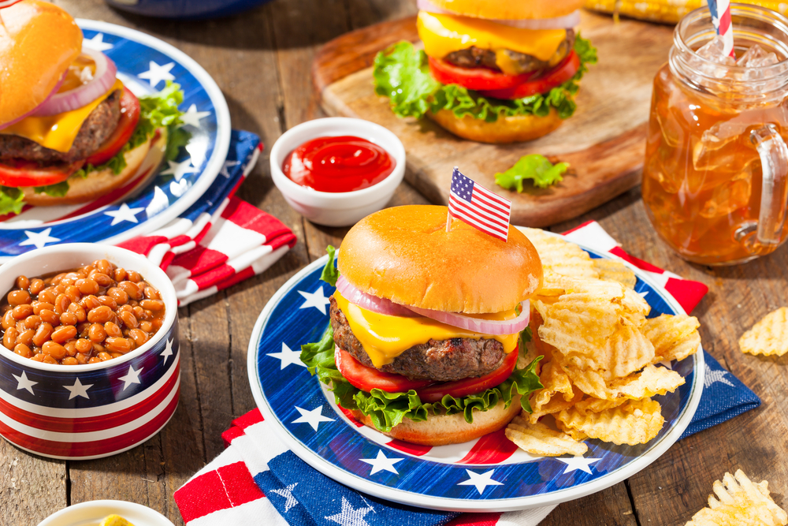
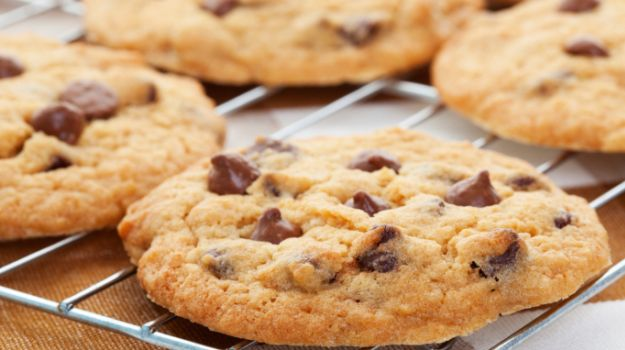
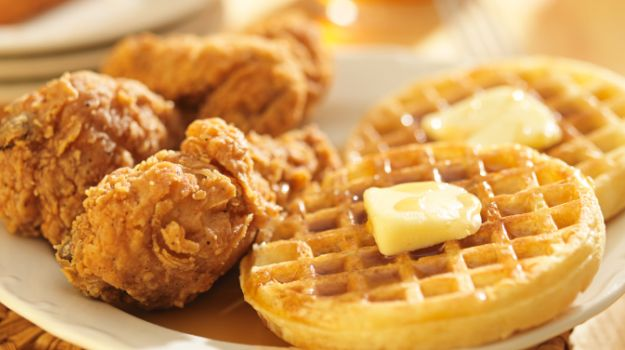
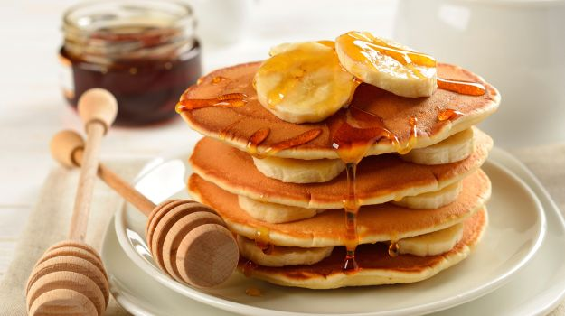
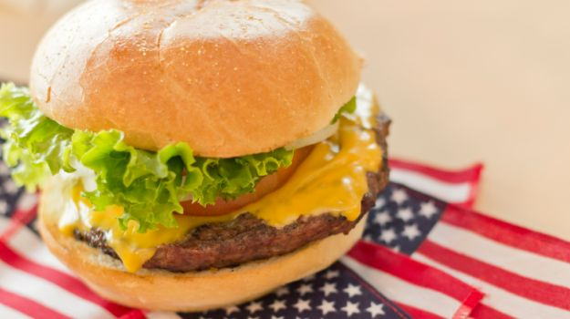
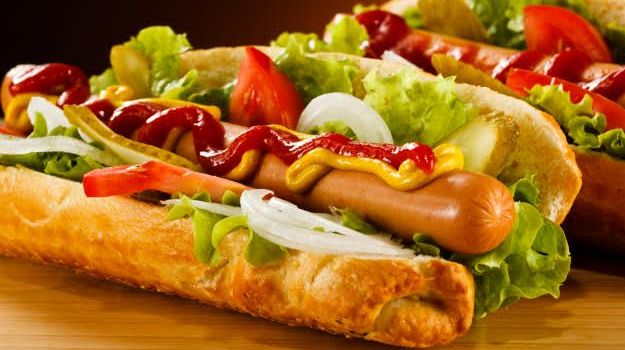

When we think of American classics our minds jump to the comforting standbys we grew up with: hot dogs, fried chicken and chocolate chip cookies. Over the years, this cuisine has made such a mark on us that it seems like at some point or the other, everyone has a little love affair with it. With the splash of American grubs all over, it has transformed from delicious to glorious in India too. And this 4th of July weekend, an all-American feast is just what you need to celebrate the nation’s endless culinary creativities. We present our list of their 10 most delicious food items of all time. This selection covers the gamut from summertime staples to comfort food favourites.

A balanced diet is a cookie in each hand”. So let’s take a moment to thank Ruth Wakefield of Massachusetts, who came up with the brilliant idea of adding chocolate to her butter cookies sometime in the 1930s. If you’re crazy about cookies just like us, bake a batch of chewy and crunchy cookies to get your dose of chocolate, and take this comfort treat to a whole new level.

Many years ago, some unknown genius decided to combine all the greatest parts of a fried chicken dinner with all the greatest parts of a waffle stack to create this ultimate sweet-savory breakfast staple. Their brainchild continues to delight stomachs all over the world. Originated in America, fried chicken is the crispiest, most delicious thing you'll ever put on top of waffles. A sinful delight you surely can’t miss!

When it comes to typical American breakfasts, there's one front-runner: pancakes. Variations abound, but you can't go wrong with a short stack of fluffy flapjacks. Pancakes are basically flat cakes, often thin and round in shape, prepared from starch based butter and cooked on a hot surface. They can be topped off with a variety of condiments like maple syrup, fruits, bacon, egg and of course, chocolate sauce. Yes, pancakes make people happy.

This is proof that God loves us and wants us to be happy. Let’s face it - who doesn’t crave a really good, juicy patty in a fresh bun? It's on nearly every American restaurant's menu. It boasts gooey cheese, tomato, lettuce, and a zippy pickle sauce. Ask for the meat to be medium rare and customise your toppings just the way you like it, with caramelised onions, mustard, mayonnaise, and relish. Americans contend to be the first to combine two slices of bread and a steak of ground beef into a hamburger ‘sandwich’.

It doesn’t get more American than a basic hot dog, sandwiched between a sliced bun, topped with a squiggle of ketchup and mustard. The sausage was created in the late 1600’s by John Geoghehner, a butcher from Germany. They were popularised in Chicago in 1893. Everyone’s favourite hot dog is basically a cooked sausage which is traditionally grilled or steamed. Garnish with mustard, ketchup, mayonnaise, onions, relish, cheese and chilli.